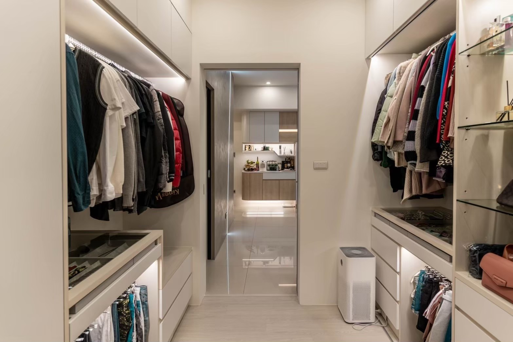

設計作品

現代簡約
現代簡約風強調「少即是多」，以清爽俐落的線條、低彩度色調與開放式格局營造純淨空間，展現安靜且具質感的生活美學。

北歐風
北歐風以自然採光、淺色木質與簡潔線條為主，融合溫暖與實用，營造出清新、舒適又具人文氣息的生活空間。

工業風
工業風強調粗獷質感與結構美感，常見裸露管線、水泥牆、鐵件與深色木材，打造出個性鮮明的空間氛圍。

無印風（日系極簡）
色系柔和、木質溫潤、收納整潔，營造寧靜有序的生活感。